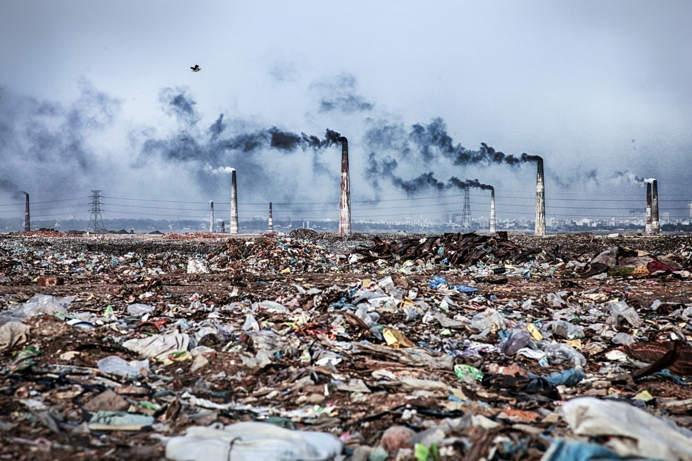

كيف تعالج مصر مشكلات تلوث الهواء؟ يكلف تلوث الهواء مصر نحو 47 مليار جنيه سنويا، من تكاليف الرعاية الصحية، وخسائر دخل الموظفين، وانخفاض الإنتاجية نتيجة الأمراض المزمنة، بحسب تقديرات البنك الدولي. ومع النمو السكاني، وزيادة الاتجاه نحو المدن والاعتماد على التصنيع، فإن مشكلات التلوث البيئي في مصر في طريقها إلى التفاقم. والضرورة الاقتصادية لمواجهة تلك المشكلة واضحة.
ما هو حجم المشكلة؟ أنتجت مصر 310 ملايين طن من الغازات الدفيئة في عام 2016، أي نحو 10% من إجمالي انبعاثات الغازات الدفيئة في منطقة الشرق الأوسط وشمال أفريقيا البالغة 3.3 مليار طن حينها. وزادت انبعاثات مصر بنسبة 140% في الفترة من عام 1990 وحتى عام 2016، وهي زيادة أسرع ثلاث مرات من المتوسط العالمي. وكانت أكبر القطاعات المتسببة في تلوث البيئة هي الطاقة (71.4% من الانبعاثات في عام 2016)، ثم الزراعة (10.2%)، والتصنيع (9.7%)، وإدارة المخلفات (8.6%).
وماذا نفعل في المقابل؟ في الجزء الثاني من سلسلتنا حول مشكلات تلوث الهواء في مصر، وجدنا أن العديد من البرامج الحكومية والمدعومة من المؤسسات التنموية الدولية والقطاع الخاص، إما تهدف إلى تخفيض الانبعاثات مباشرة، أو تخفيضها عن طريق تمويل أنشطة أخرى صديقة للبيئة.
البرنامج المدعوم من البنك الدولي بقيمة 200 مليون دولار هو أكبر الجهود الحالية لخفض الانبعاثات: يهدف قرض البنك الدولي البالغة قيمته 200 مليون دولار، الذي أقره البنك مؤخرا، إلى تحديث أنظمة مراقبة جودة الهواء، وإنشاء مجمع متكامل لدفن ومعالجة المخلفات في مدينة العاشر من رمضان، وإغلاق وإعادة تأهيل مكبات النفايات في أبو زعبل، وإنشاء نقاط لشحن السيارات الكهربائية، ودعم العديد من المبادرات الخضراء الأخرى. وتقليل حرق المخلفات على وجه التحديد له أهمية كبيرة، حسبما يقول علي أبو سنة مستشار وزير البيئة لإنتربرايز. وبموجب قانون إدارة المخلفات الجديد، ستغلق كل مكبات النفايات التقليدية خلال عامين، وسيكون مجمع العاشر من رمضان بديلا أفضل للبيئة، حسبما يضيف أبو سنة.
الحملات التفتيشية على المنشآت الصناعية مستمرة: في عام 2020، قامت الإدارة المركزية للتفتيش والالتزام البيئي بالتفتيش على 4457 منشأة صناعية غير متصلة بالشبكة القومية لرصد الانبعاثات، منها 797 منشأة في القاهرة الكبرى، و3360 منشأة في المحافظات الأخرى. إذا لم تمتثل المنشأة إلى اللوائح والتشريعات البيئية، بما في ذلك إنشاء شبكات الرصد الذاتى المستمر وإتاحة بياناتها لجهاز شئون البيئة، وبذل الجهد لتقليل التلوث من مصدره، وإدارة المخلفات بكفاءة، فإنها قد تتعرض قانونا للغلق بعد تكرار الإنذارات. ولا تتوفر أي بيانات رسمية حول عدد المنشآت التي جرى إغلاقها خلال حملات التفتيش تلك.
وعلى الرغم من النمو بوتيرة بطيئة.. تأمل وزارة البيئة في تنمية شبكة رصد انبعاثات المصانع: أطلقت وزارة البيئة الشبكة القومية لرصد الانبعاثات الصناعية، التي تقيس معدلات تلوث الهواء اليومية للمصانع التي تضمها. وارتفع عدد المصانع المرتبطة بالشبكة إلى 76 مصنعا في 2020، إضافة إلى 352 نقطة مراقبة، مقارنة بـ 60 مصنعا في 2018 و69 في 2019، وفق ما أظهره تقرير للوزارة (بي دي إف). ويقول أبو سنة إن زيادة عدد المصانع المرتبطة بالشبكة يأتي على رأس أولويات الوزارة.
الحكومة تدرس تقديم حوافز جديدة لتقليل الانبعاثات واستخدام البلاستيك: يقول أبو سنة إن لجنة وزارية مشتركة تدرس حاليا عدد من الحوافز، من بينها تخفيض الرسوم والإعفاءات الضريبية، لدعم الشركات التي تصنع مواد تغليف غير بلاستيكية. ويرى أن الخطوة المزمعة ستجعل الأسعار أكثر تنافسية ويرفع من طلب المستهلكين، كما سيشجع على دخول المزيد من اللاعبين للسوق. ومن المقرر أن تكون الحوافر جاهزة للعرض على مجلس الوزراء في غضون أشهر. وإلى جانب الحوافز، تدرس وزارتا المالية والتموين فرض رسوم جزائية على إنتاج البلاستيك. ويشير بحث حديث أجراه أكاديميون في جامعة كاليفورنيا إلى أن البلاستيك تتسبب في 3.8% من انبعاثات غازات الاحتباس الحراري على مدار دورتها الحياتية، وهو ما يعادل ضعف انبعاثات قطاع الطيران تقريبا.

إلى جانب ذلك، هناك عدة مبادرات ذات أولوية تستهدف جعل الهواء أكثر نقاء. في قطاع النقل، هناك خطة الحكومة لإحلال وتحويل 1.8 مليون مركبة للعمل بالغاز الطبيعي في غضون 10 سنوات، بتكلفة إجمالية تصل إلى 320 مليار جنيه. وخصصت الدولة أيضا 141 مليار جنيه لتطوير شبكة السكك الحديدية بحلول عام 2022. ومن المقرر افتتاح خط سكة حديد كهربائي بطول 90 كيلومتر في أكتوبر المقبل. ويجري العمل حاليا أيضا على تنفيذ مشروع خطي المونوريل البالغة تكلفته 4.5 مليار دولار، إلى جانب الخط الثالث لمترو أنفاق القاهرة الذي افتتح العام الماضي بتكلفة 32 مليار جنيه. ودخلت مصر بثقلها أيضا في سباق السيارات الكهربائية، إذ من المقرر أن تبدأ شركة النصر للسيارات تجميع المركبات الكهربائية في يوليو المقبل، وتستهدف إنتاج 53 ألف وحدة سنويا عندما تصل لطاقتها الإنتاجية الكاملة. في الوقت ذاته، من المتوقع إنتاج الأتوبيسات الكهربائية محليا قبل نهاية العام الجاري. وعلى صعيد الطاقة المتجددة، شهدت الفترة الماضية عقد العديد من الشراكات لإنشاء محطات طاقة رياح بتكلفة 1.5 مليار دولار.
الجائحة سرعت وتيرة الخطط المستهدفة، وفقا لوزيرة البيئة ياسمين فؤاد التي قالت أيضا في مقابلة مع رويترز خلال مايو الماضي "بدأنا بالفعل خططا للحد من تلوث الهواء في مصر. لكن منحنا فيروس كوفيد-19 الفرصة لتسريع هذه الخطط وتوسيعها والتفكير في حلول أخرى".
الشيء المؤكد هو أن فرض قيود على الصناعة أثناء الإغلاق ليس الحل، طبقا للوزيرة التي أضافت أن "علينا مواصلة الإنتاج في المصانع والمؤسسات الصناعية الأخرى مع تطبيق معايير بيئية عالية. هذه هي الرسالة الصحيحة التي يجب أن نبعثها".
وتتوافق الكثير من تلك الخطط بالفعل مع أفضل الممارسات العالمية: يوصي تقرير للأمم المتحدة (بي دي إف) صدر عام 2019 بـ 25 حلا لتحسين جودة الهواء في آسيا. وبعض هذه التوصيات، مثل تطوير النقل العام وإدارة المخلفات، هي بالفعل عناصر رئيسية في خطة مصر. ويوصي التقرير أيضا بالترويج لاستخدام المركبات الكهربائية.
مصر يمكنها تحصيل المزيد من خلال الاستفادة من تجارب الدول الأخرى؟ يمكن لمنطقة الشرق الأوسط وشمال أفريقيا أن تتعلم من الاقتصادات الناشئة التي تبنت بشكل مبكر تكنولوجيات الطاقة النظيفة وفرضت خططا لإصلاح السياسة البيئية، لتقليل التلوث دون إعاقة النمو الاقتصادي، وفق ما قاله محلل الطاقة والبيئة محمود أبو النجا. وسنتناول المزيد عن ذلك في عدد الأسبوع المقبل من الاقتصاد الأخضر.
فيما يلي أهم الأخبار المرتبطة بالحفاظ على المناخ لهذا الأسبوع:
البنك الأوروبي لإعادة الإعمار والتنمية يشارك في تدبير حزمة تمويلية بقيمة 114 مليون دولار لصالح محطة توليد الكهرباء من الطاقة الشمسية بمنطقة كوم أمبو في أسوان. ووقع البنك أيضا مذكرة تفاهم لضم مدينة السادس من أكتوبر إلى برنامج المدن الخضراء البالغ قيمته 2.5 مليار يورو.
صندوق مصر السيادي يدرس حاليا طرح عدد من مشاريع تحلية المياه ومعالجتها أمام المستثمرين، بحسب وزيرة التخطيط ورئيسة الصندوق هالة السعيد.
لجنة الطاقة في مجلس النواب تقر مشروع قانون بإلغاء هيئة تنفيذ مشروعات المحطات المائية لتوليد الكهرباء وإنشاء هيئة جديدة باسم هيئة تنمية واستخدام الطاقة الجديدة والمتجددة، والتي ستؤول إليها جميع أصول الهيئة الملغاة.